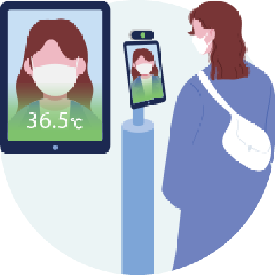
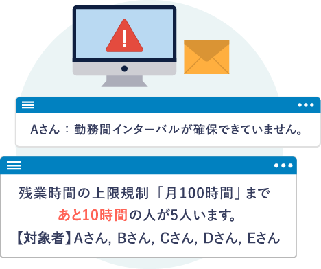
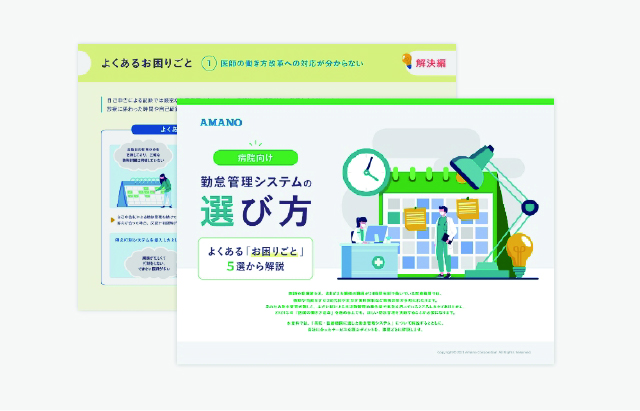
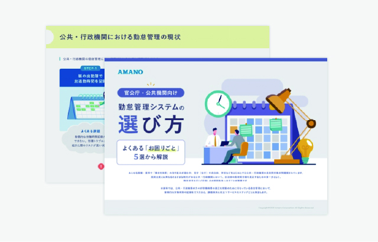

こんな課題をお持ちの方へ
-
医師の働き方改革
実現の目途が
たっていない。 -
宿日直許可を
取得したい
（特に公立・公的病院） -
医師が勤怠管理に
協力的ではない
セミナー内容
病院経営のプロである日本経営と勤怠管理のプロであるアマノがタッグを組んで、
医師の働き方改革という難題に悩む病院へ向け、実践的な対応策を解説します。
-
意外と認知されていない、医師の働き方改革における“最重要事項”とはなにか？
日本経営×アマノ
医師の働き方改革のスタートラインに立つうえで、まず初めにやるべきことはなんなのか？
これを抑えぬまま改革を進めてしまうことで、上手く改革が進まないという事例が散見されます。意外と認知されていない最重要事項について解説します。 -
病院経営のプロが考える「経営戦略としての働き方改革」
日本経営
医師の働き方改革の中でも、宿日直許可に関しては、労働時間算定・医師派遣に大きく影響を与えることもあり、「許可を取ってない」「許可証を紛失してしまった」「許可当時と現状に相違がある」といった医療機関からのご相談依頼が増えています。これからは、全ての医療機関において「時間管理」と「賃金管理」が必須となるでしょう。事例をもとにそのポイントをご紹介します。
- 最新の行政検討内容のおさらいと各医療機関の現状
- 待ったなし！要となる「宿日直許可」のポイント
- 「急性期病院の宿日直許可取得の取り組み事例」
- コロナ禍の今、すべき組織づくりのポイント
-
勤怠管理のプロが考える「労働時間把握のベストプラクティス」
アマノ
1,000件以上の病院に勤怠管理システムを導入してきた経験から言えることは、勤怠管理システムは性能よりも“どのように運用するか”が重要ということです。医師の労働時間把握に対しての具体的な対応策について活用事例をもとにご紹介します。
- 非協力的な医師の時間管理を進めるための対応策
- 宿日直、研鑽など、各種除外時間の管理
- １人でも違反すれば罰則！上限規制を確実に漏れなく守るための対策
- 労務トラブルを防ぐために残しておくべき勤怠データ
講師紹介
-
株式会社日本経営 取締役
橋本 竜也
入社以来、人事コンサルティング部門にて、一貫して病院・企業の人事制度改革に携わる。2006年には調剤薬局に出向し、収益改善と組織改革を実現。コンサルティングにおいては、人事改革、組織改革のほか、赤字病院の経営再建にも従事。2013年1月福岡オフィス長に就任。2017年10月より株式会社日本経営取締役。
-
アマノ株式会社 時間情報事業本部長
山田 和人
20年以上にわたり大手企業向けソリューション営業として従事。その際、様々な業種の勤怠刷新プロジェクトに参加し経験を積む。東京支店長、ソリューション営業部長を経て現職。
-
アマノ株式会社 時間情報事業本部
ソリューション営業部 係長松原 茂
入社から10年以上に渡りフィールドSEとして、現場の第一線で中小企業から上場企業まで様々な業種業態の勤怠管理システム構築に携わり、お客様が抱える課題の解決、働き方改革の実現支援に従事。
通算200件以上の勤怠管理システム構築実績を持つ。
当日のご参加方法
-
本セミナーはWebセミナーツールにて配信をいたします。
お申し込みの方には担当者から開催前に視聴リンク（URL）をお知らせいたします。ご自身の端末から接続をお願いいたします。できるだけ静かな場所で参加いただくようにお願いいたします。 - インターネットの環境、受講用の端末はご自身でご用意ください。インターネットにつないだパソコン若しくはタブレット端末をご用意ください。スマートフォンはご遠慮ください。
- ZOOMというアプリケーションを用いてセミナーに参加いただきます。ボタン一つで参加できますが、タブレット端末からは事前にアプリケーションをインストールいただく必要があります。（パソコンの場合は、セミナー前にお送りするURLをクリックすれば自動でインストールされます。）
-
すでにZoomアプリをお使いの方は、【バージョン5.0.0以上】への更新を必ずお願いいたします。
※ 5.0.0未満の場合、セミナーへの参加ができない恐れがあります。
セミナーに関する
お問い合わせ
セミナーに関するお問い合わせは下記よりお願いいたします。
株式会社日本経営 セミナー事務局
0120-65-1162
事務局 受付時間 10:00~16:00
（土日祝日、年末年始を除く）
アマノ株式会社 時間情報事業本部 事業企画推進部
mail tisinfo@amano.co.jp
こんなこともできる？ ぜひアマノにご相談ください！
-
 検温検査機能付き
顔認証タイムレコーダー -

他システムとの連携不要
パソコンログと
打刻のW管理 -
法令遵守の
シフト作成 -
 労務トラブルを防ぐ
システムナビゲーション
など、貴社の今の
課題に合わせたソリューション
をご提案いたします。
お役立ちダウンロードコンテンツ
アマノが運営するお役立ち情報メディアでは人事・労務の最前線情報をはじめ、
効率化・ノウハウから法律や助成金まで労務全般の課題解決に役立つコンテンツをご紹介しております。
-

【病院向け】 勤怠管理システムの選び方 よくある「お困りごと」5選から解説
2024年に施行予定の「医師の働き方改革」に向けて、病院が取り組むべき勤怠管理について、よくあるよくあるお悩み事とその解決策をご紹介します。本ページで解説した課題に対する解決策を、より詳細にまとめた資料をご用意しています。新たに勤怠管理システムの導入を検討している方はもちろん、勤怠管理に課題を抱えている現場の方にも役立つノウハウが盛りだくさんです。
-

【官公庁・公共機関向け】勤怠管理システムの選び方 – よくある「お困りごと」5選から解説 –
官公庁・公共機関の勤怠管理における課題と解決方法をステップごとに解説しています。また、実際にアマノの製品を導入した自治体様の成功事例をご紹介しています。